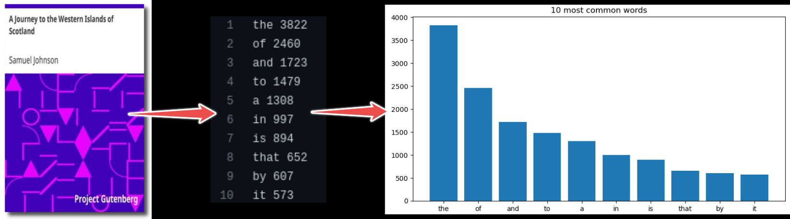

Python performance workshop
Intro
Prerequisites
Python programming basics (functions,
forloops,if-elsestatements) and data structures (list,set,dict,tuple)Familiarity with well-known numeric libraries (for example, Numpy)
10 min |
|
10 min |
|
10 min |
|
xx min |
|
xx min |
|
xx min |
|
xx min |
Installation
This page contains instructions for installing the required dependencies on a local computer.
Local installation
If you already have a preferred way to manage Python versions and libraries, you can stick to that[1]. If not, we recommend that you install Python3 and all libraries using Miniforge, a free minimal installer for the package, dependency and environment manager conda.
Please follow the installation instructions on https://conda-forge.org/download/ to install Miniforge.
Make sure that both Python and conda are correctly installed:
$ python --version
$ # should give something like Python 3.12.5
$ conda --version
$ # should give something like conda 24.7.1
With conda (or mamba) installed, install the required dependencies by running:
$ conda env create -f https://raw.githubusercontent.com/ENCCS/python-perf/main/content/env/environment.yml
This will create a new environment python-perf which you need to activate
by:
$ conda activate python-perf
Finally, open Jupyter-Lab in your browser:
$ jupyter-lab
Introduction and motivation
Objectives
Know what to expect from this course
Build a general, programming-language agnostic notion of performance
Instructor note
10 min teaching
Python and its defacto implementation CPython is now widely used for a spectrum of applications. It has now experienced practitioners doing web-development, analytics, research and data science. This is possible because of the following traits of the Python ecosystem:
Batteries included
High-level programming that abstracts away the technical details
Mature well-maintained libraries which form a firm foundation, the scientific Python ecosystem, which includes:

Numpy: numerical computing with powerful numerical arrays objects, and routines to manipulate them.
Scipy: high-level numerical routines. Optimization, regression, interpolation, etc.
Matplotlib: 2-D visualization, “publication-ready” plots.


pandas for reading, writing and analyzing heterogenous tabular data
statsmodels, seaborn for statistics
sympy for symbolic computing
scikit-image for image processing
scikit-learn for machine learning
and many more…
Different kinds of performance bottlenecks
I/O bound: the code idles often and is waiting for a disk or network read/write operation to finish. Such bottlenecks can be often remedied by caching, multi-threading or async-programming.
Memory bound: the data to be processed does not fit in the RAM and the code needs to process data in batches instead. This is often a hardware limitation.
CPU bound: the code consumes a lot of CPU cycles, often seen by monitoring the system showing 100% CPU usage in 1 core for serial applications, or in all cores for parallel applications. This will be the focus of this workshop.
Gems of wisdom
Before we dive further into the workshop it is important to remember some idioms, which is true in the case of most real-world applications.
The real problem is that programmers have spent far too much time worrying about efficiency in the wrong places and at the wrong times; premature optimization is the root of all evil (or at least most of it) in programming.
Programmers waste enormous amounts of time thinking about, or worrying about, the speed of noncritical parts of their programs, and these attempts at efficiency actually have a strong negative impact when debugging and maintenance are considered. We should forget about small efficiencies, say about 97% of the time: premature optimization is the root of all evil. Yet we should not pass up our opportunities in that critical 3%.
– Donald Knuth (computer scientist, mathematician and the author of The Art of Computer Programming)
80 percent of the runtime is spent in 20 percent of the source code.
– Scott Meyers (author of Effective C++ Digital Collection: 140 Ways to Improve Your Programming)
Keypoints
Find a balance between runtime efficency and cost of development.
Tests can help in maintain correctness before you change the code.
CPU-bound or I/O-bound or memory bound?
Do not optimize everything.
Creating extensions are one way of improving performance
Performance fundamentals
Objectives
Learn Python specific performance aspects
Instructor note
10 min teaching/type-along
Understanding the Python interpreter
Performance bottlenecks in Python
Have you ever written Python scripts that look something like this?
def read_xyz_from_text_file():
f = open("mydata.dat", "r")
for line in f.readlines():
fields = line.split(",")
x, y, z = fields[0], fields[1], fields[2]
# some analysis with x, y and z
f.close()
Compared to C/C++/Fortran, this for-loop will probably be orders of magnitude slower!
This happens because during the execution step CPython mostly interprets instructions. There is some level of optimization involved though. Here is a simplified schematic of how this is invoked:
Important
While doing so, the interpreter
evaluates a result, expression-by-expression.
every intermediate result is packed and unpacked as an instance of
object(Python) /PyObject(CPython API) behind the scenes.
Type-Along
Try out the following code in Python Tutor
import io
def rms_from_text_file(f):
"""Compute root-mean-square of comma-separated values."""
rms = 0
n_samples = 0
for line in f.readlines():
fields = line.split(",")
x, y, z = float(fields[0]), float(fields[1]), float(fields[2])
# compute root-mean-square value
rms += ((x**2 + y**2 + z**2) / 3) ** 0.5
n_samples += 1
return rms / n_samples
fake_file = io.StringIO("""\
0.27194615,0.85939776,0.76905204
0.51586611,0.59174447,0.06501842
0.23109192,0.8260391,0.08045166
""")
avg_rms = rms_from_text_file(fake_file)
Be aware that this is a simplified version of the execution. Since it does not go into the expression level. However you can get an idea of the intermediate objects being returned and the way the interpreter parses the code.
Discussion
In the previous episode, we described I/O, Memory and CPU bound bottlenecks. For the above use case and algorithm, and not necessarily the same code, what kind of performance issue arise,
when the file becomes long, with several millions of lines?
when the file is stored in network filesystem which is slow to respond?
when instead of 3 fields,
x, y, z, you have to read 10 million fields for every line of the text?
Solution
We can only guess at this point, but we can expect the above code to be
CPU bound: the
forloop becomes a hotspot and vanilla CPython without JIT does not optimize this.I/O bound: if more time is spent in awaiting output of
f.readlines()methodMemory bound: if a line of data does not fit in the memory the code needs to handle it in batches. The program will need to be rewritten with nested for-loop which depends on the memory availability.
We have to keep in mind that performance depends a lot on the kind of
input data
algorithm
Using a better container for the input data or a better algorithm with less computation complexity can often outperform technical solutions.
Structured approach towards optimization
The first priority is to look for an more efficient:
Data container, data structure, database etc.
Algorithm
If the above are not an option, then we move on to performance optimization.
First we evaluate the overall performance by benchmarking.
Then we measure the performance of at either function/method-level or line-level by profiling.
Finally we generate optimized code.
Any Python code can be replaced using optimized instructions. This is done by ahead of time (AOT) / just-in-time (JIT) compilation. The question which remains to be answered is at which level? One can optimize:
: whole programs (Nuitka, Shed Skin)
{kind=link}
: interpreter compiling slowest loops (PyPy)
{kind=link}
 : modules (
: modules (cython, pythran)
: user-defined functions / methods (numba, transonic)
{kind=link}
 : expressions (
: expressions (numexpr)
: call compiled functions (numpy / Python)
We will take a look at some of these approaches in the coming episodes.
Keypoints
Develop a strategy on how to optimize.
Go shopping.
Look for better ways of reading data or better algorithms
Look for tools and libraries to help you alleviate the performance bottlenecks.
Benchmark
Objectives
Introduce the
Preparing the system for benchmarking
Running benchmarks
Instructor note
The problem: word-count-hpda

In this episode, we will use an
example project
which finds most frequent words in books and plots the result
from those statistics. The project contains a
script source/wordcount.py which is executed to analyze word
frequencies from some books. The books are saved in plain-text format
in the data directory.
For example to run this code for one book, pg99.txt
$ git clone https://github.com/ENCCS/word-count-hpda.git
$ cd word-count-hpda
$ python source/wordcount.py data/pg99.txt processed_data/pg99.dat
$ python source/plotcount.py processed_data/pg99.dat results/pg99.png
Preparation: Use pyperf to tune your system
Most personal laptops would be running in a power-saver / balanced power management mode. This would include that the system has a scaling governor which can change the CPU clock frequency on demand, among other things. This can cause jitter which means that benchmarks are not reproducible enough and are less reliable.
In order to improve reliability of your benchmarks consider running the following
Warning
It requires admin / root privileges.
# python -m pyperf system tune
When you are done with the lesson, you can run python -m pyperf system reset or
restart the computer to go back to your default CPU settings.
See also
Benchmark using time
In order to observe the cost of computation, we need to choose a sufficiently large input data file and time the computation. We can do that by concatenating all the books into a single input file approximately 45 MB in size.
Type-Along
Copy the following script.
import fileinput
from pathlib import Path
files = Path("data").glob("pg*.txt")
file_concat = Path("data", "concat.txt")
with (
fileinput.input(files) as file_in,
file_concat.open("w") as file_out
):
for line in file_in:
file_out.write(line)
Open an IPython console or Jupyterlab, with word-count-hpda as the
current working directory (you can also use %cd inside IPython
to change the directory).
%paste
%ls -lh data/concat.txt
import sys
sys.path.insert(0, "source")
import wordcount
%time wordcount.word_count("data/concat.txt", "processed_data/concat.dat", 1)
$ cat data/pg*.txt > data/concat.txt
$ ls -lh data/concat.txt
$ time python source/wordcount.py data/concat.txt processed_data/concat.dat
Solution
In [1]: %paste
import fileinput
from pathlib import Path
files = Path("data").glob("pg*.txt")
file_concat = Path("data", "concat.txt")
with (
fileinput.input(files) as file_in,
file_concat.open("w") as file_out
):
for line in file_in:
file_out.write(line)
## -- End pasted text --
In [2]: %ls -lh data/concat.txt
-rw-rw-r-- 1 ashwinmo ashwinmo 45M sep 24 14:54 data/concat.txt
In [3]: import sys
...: sys.path.insert(0, "source")
In [4]: import wordcount
In [5]: %time wordcount.word_count("data/concat.txt", "processed_data/concat.dat", 1)
CPU times: user 2.64 s, sys: 146 ms, total: 2.79 s
Wall time: 2.8 s
$ cat data/pg*.txt > data/concat.txt
$ ls -lh data/concat.txt
-rw-rw-r-- 1 ashwinmo ashwinmo 46M sep 24 14:58 data/concat.txt
$ time python source/wordcount.py data/concat.txt processed_data/concat.dat
real 0m2,826s
user 0m2,645s
sys 0m0,180s
Note
What are the implications of this small benchmark test?
It takes a few seconds to analyze a 45 MB file. Imagine that you are working in a library and you are tasked with running this on several terabytes of data.
10 TB = 10 000 000 MB
Current processing speed = 45 MB / 2.8 s ~ 16 MB/s
Estimated time = 10 000 000 / 16 = 625 000 s = 7.2 days
Then the same script would take days to complete!
Benchmark using timeit
If you run the %time magic / time command again, you will notice
that the results vary a bit. To get a reliable answer we should repeat
the benchmark several times using timeit. timeit is part of
the Python standard library and it can be imported in a Python script
or used via a command-line interface.
If you’re using IPython / Jupyter notebook, the best choice will be
to use the %timeit magic.
As an example, here we benchmark the Numpy array:
import numpy as np
a = np.arange(1000)
%timeit a ** 2
# 1.4 µs ± 25.1 ns per loop
We could do the same for the word_count function.
In [6]: %timeit wordcount.word_count("data/concat.txt", "processed_data/concat.dat", 1)
# 2.81 s ± 12.2 ms per loop (mean ± std. dev. of 7 runs, 1 loop each)
We could use python -m timeit which is the CLI interface of the standard library module timeit,
$ export PYTHONPATH=source
$ python -m timeit --setup 'import wordcount' 'wordcount.word_count("data/concat.txt", "processed_data/concat.dat", 1)'
1 loop, best of 5: 2.75 sec per loop
or an even better alternative is using python -m pyperf timeit
$ export PYTHONPATH=source
$ python -m pyperf timeit --fast --setup 'import wordcount' 'wordcount.word_count("data/concat.txt", "processed_data/concat.dat", 1)'
...........
Mean +- std dev: 2.72 sec +- 0.22 sec
Notice that the output reports the arithmetic mean and standard deviation of timings. This is a good choice, since it means that outliers and temporary spikes in results are not automatically removed, which could be as a result of:
garbage collection
JIT compilation
CPU or memory resource limitations
Keypoints
pyperfcan be used to tune the systemWe understood the use of
timeandtimeitto create benchmarkstimeis faster, since it is executed only oncetimeitis more reliable, since it collects statistics
Profile
Objectives
Learn how to profile Python code using
cProfileLearn how to visualise cProfile results using
SnakeVizExamine the most most expensive function call via
line_profiler
Instructor note
Using cProfile to investigate performance
While %timeit can provide good benchmarking information on single lines or single functions,
larger codebases have more complex function hierarchies which require more sofisticated tools to
traverse properly. Python comes with two built-in tools
to profile code, which implement the same interface: cProfile and profile.
These tools can help to identify performance bottlenecks in the code.
In this lesson, we will use cProfile due to its smaller overhead (profile, on the other hand,
is more extensible). The standard syntax to call it is:
$ python -m cProfile [-o <outputFile>] <python_module>
By default, cProfile writes the results to stdout, but the optional -o flag redirects
the output to file instead. A report can be generated using the pstats command.
Type-Along
Let’s profile the wordcount script and write the results to a file.
The %run magic supports profiling out-of-the-box using the -p flag. The script can be run as:
In [1]: %run -p -D wordcount.prof source/wordcount.py data/concat.txt processed_data/concat.dat
*** Profile stats marshalled to file 'wordcount.prof'.
We can call cProfile as:
$ python -m cProfile -o wordcount.prof source/wordcount.py data/concat.txt processed_data/concat.dat
We can then generate a report using the pstats command:
$ python -m pstats wordcount.prof
# Welcome to the profile statistics browser.
# wordcount.prof% sort tottime
# wordcount.prof% stats
# Wed Sep 25 11:52:27 2024 wordcount.prof
# 53473208 function calls in 8.410 seconds
# Ordered by: internal time
# ncalls tottime percall cumtime percall filename:lineno(function)
# 1233410 4.151 0.000 7.204 0.000 source/wordcount.py:41(update_word_counts)
# 32068660 1.799 0.000 1.799 0.000 {method 'replace' of 'str' objects}
# 7747363 0.570 0.000 0.570 0.000 {method 'lower' of 'str' objects}
# 7747363 0.428 0.000 0.428 0.000 {method 'strip' of 'str' objects}
# 1530212 0.271 0.000 0.271 0.000 source/wordcount.py:23(<genexpr>)
# 1233411 0.256 0.000 0.256 0.000 {method 'split' of 'str' objects}
# 1 0.184 0.184 7.388 7.388 source/wordcount.py:59(calculate_word_counts)
# 382553 0.133 0.000 0.404 0.000 {method 'join' of 'str' objects}
# 1 0.126 0.126 0.580 0.580 source/wordcount.py:16(save_word_counts)
# ...
Discussion
Profiling introduces a non-negligible overhead on the code being executed. Thus, the absolute values for time being spent in each function should be taken with a grain of salt. The real objective lies in understanding the relative amount of time spent in each function call.
Using SnakeViz to visualise performance reports
SnakeViz is a browser-based visualiser of
performance reports generated by cProfile. It is already included among the
dependecies installed in this virtual/Conda environment.
Type-Along
SnakeViz has a IPython magic to profile and open a browser directly. To use it, we just need to load the relevant extension and run it:
In [4]: %load_ext snakeviz
In [5]: %snakeviz wordcount.word_count("data/concat.txt", "processed_data/concat.dat", 1)
Warning
This will run only if the source IPython instance has access to a local web browser.
This also means that, e.g., if you are on Windows and following the tutorial in WSL,
this will not work.
We can run SnakeViz as:
$ snakeviz wordcount.prof --server
The output will contain a clickable link containing the visualisation.

Based on the output, we can clearly see that the update_word_counts() function
is where most of the runtime of the script is spent.
Using line_profiler to inspect the expensive function
Once the main performance-intensive function is identified, we can further examine it
to find bottlenecks. This can be done using the line_profiler tool, which returns a line-by-line
breakdown of where time is spent.
Type-Along
Let’s profile the wordcount script and write the results to a file.
The line_profiler package provides a magic to be used in IPython. First, the
magic needs to be loaded:
In [1]: %load_ext line_profiler
The script can be run with the %lprun magic, whose syntax is very close to the %run
introduced above. Notice that we have to explicitly mention which functions we want to step through
line by line:
In [5]: %lprun -f wordcount.update_word_counts wordcount.word_count("data/concat.txt", "processed_data/concat.dat", 1)
To use line_profiler from the command line, the functions to be profiled need to be explicitly marked.
For this reason, we need to import the relevant decorator at the beginning of the wordcount.py script:
from line_profiler import profile
We can now mark the update_word_counts function with the @profile decorator:
@profile
def update_word_counts(line, counts):
Profiling is performed with a script called kernprof. Its usage is the following:
kernprof -lvr source/wordcount.py data/concat.txt processed_data/concat.dat
The -l flag ensures that the function is profiled step-by-step, the -v flag
shows the result on stdout and the -r flag is used to have rich format on output.
Wrote profile results to wordcount.py.lprof
Timer unit: 1e-06 s
Total time: 12.2802 s
File: source/wordcount.py
Function: update_word_counts at line 40
Line # Hits Time Per Hit % Time Line Contents
==============================================================
40 @profile
41 def update_word_counts(line, counts):
42 """
43 Given a string, parse the string and update a dictionary of word
44 counts (mapping words to counts of their frequencies). DELIMITERS are
45 removed before the string is parsed. The function is case-insensitive
46 and words in the dictionary are in lower-case.
47 """
48 33302070 2574252.9 0.1 21.0 for purge in DELIMITERS:
49 32068660 4405499.9 0.1 35.9 line = line.replace(purge, " ")
50 1233410 392268.8 0.3 3.2 words = line.split()
51 8980773 819407.4 0.1 6.7 for word in words:
52 7747363 1457841.0 0.2 11.9 word = word.lower().strip()
53 7747363 1355462.5 0.2 11.0 if word in counts:
54 7364810 1211000.7 0.2 9.9 counts[word] += 1
55 else:
56 382553 64505.7 0.2 0.5 counts[word] = 1
Based on the output, we can conclude that most of the time is spent replacing delimiters.
Keypoints
The
cProfilemodule can provide information on how costly each function call is.Profile reports can be inspected using the
pstatstool in tabular form or with SnakeViz for a graphical visualisationThe
line_profilertool can be used to inspect line-by-line performance overhead.
Optimize
Objectives
Instructor note
Parallelize
Objectives
Instructor note
Quick Reference
Instructor’s guide
Why we teach this lesson
To deep dive in
Intended learning outcomes
By the end of a workshop covering this lesson, learners should be able to:
gain a better understanding of common performance bottlenecks in Python
profile, to measure the speed of distinct parts of the code
benchmark, to quantify the overall performance of their code
optimize, to alleviate bottlenecks
parallelize, to scale up and reduce time to solution
Timing
Preparing exercises
e.g. what to do the day before to set up common repositories.
Have a working Python installation.
Other practical aspects
Interesting questions you might get
Typical pitfalls
Who is the course for?
Software developers, researchers, students who use Python often and process a lot of data.
About the course
See also
Credits
The lesson is inspired and derived from the following:
Creative Commons CC-BY 4.0 licensed material
https://github.com/ENCCS/hpda-python
https://github.com/ENCCS/word-count-hpda
https://github.com/coderefinery/word-count
https://coderefinery.github.io/reproducible-research
https://hpc-carpentry.github.io/hpc-python/
Images and description by authors of lectures.scientific-python.org and by authors of deep-learning-intro
PyCon Sweden 2019 talk on https://talks.fluid.quest/
Other open-source licenced material
Images by authors of Project Jupyter is licensed under BSD 3-Clause “New” or “Revised” License
Images from The Noun Project is licensed under CC-BY 3.0